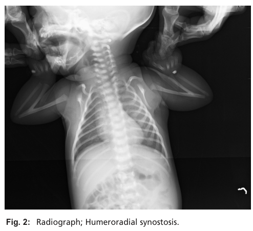

Humeroradial synostosis (HRS) is a rare congenital limb malformation characterized by bony fusion of the distal humerus and proximal radius across the elbow joint, producing elbow ankylosis and functional disability. HRS reflects a failure of normal elbow joint development — defective joint interzone specification, suppression of chondrogenesis at the prospective joint, and failed joint cavitation — so that the cartilaginous humeroradial articulation never separates and instead ossifies as a continuous skeletal bridge. HRS occurs as an isolated trait (familial or sporadic) and as a feature of numerous syndromes (e.g., Antley-Bixler syndrome, Juberg-Hayward syndrome, Al-Awadi-Raas-Rothschild syndrome), and has been linked to disturbed steroidogenesis and environmental exposures during early pregnancy.
Ask a research question about Humeroradial Synostosis. OpenScientist will conduct autonomous deep research using the Disorder Mechanisms Knowledge Base and PubMed literature (typically 10-30 minutes).
Do not include personal health information in your question. Questions and results are cached in your browser's local storage.
name: Humeroradial Synostosis
creation_date: "2026-06-17T00:00:00Z"
category: Mendelian
description: >
Humeroradial synostosis (HRS) is a rare congenital limb malformation
characterized by bony fusion of the distal humerus and proximal radius across
the elbow joint, producing elbow ankylosis and functional disability. HRS
reflects a failure of normal elbow joint development — defective joint
interzone specification, suppression of chondrogenesis at the prospective
joint, and failed joint cavitation — so that the cartilaginous humeroradial
articulation never separates and instead ossifies as a continuous skeletal
bridge. HRS occurs as an isolated trait (familial or sporadic) and as a
feature of numerous syndromes (e.g., Antley-Bixler syndrome, Juberg-Hayward
syndrome, Al-Awadi-Raas-Rothschild syndrome), and has been linked to
disturbed steroidogenesis and environmental exposures during early pregnancy.
disease_term:
preferred_term: humeroradial synostosis
term:
id: MONDO:0007737
label: humeroradial synostosis
parents:
- Congenital Limb Malformation
has_subtypes:
- name: Isolated
display_name: Isolated (Nonsyndromic) Humeroradial Synostosis
description: >
Humeroradial synostosis occurring as an isolated limb anomaly without an
associated multisystem syndrome. May be unilateral or bilateral, familial
or sporadic. Frequently accompanied by other regional upper-limb anomalies
such as ulnar deficiency/hemimelia and oligodactyly.
- name: Syndromic
display_name: Syndromic Humeroradial Synostosis
description: >
Humeroradial synostosis occurring as one feature of a broader malformation
syndrome. Recognized syndromic contexts include Antley-Bixler syndrome
(FGFR2 / POR cytochrome P450 oxidoreductase deficiency, with
craniosynostosis and disordered steroidogenesis), Juberg-Hayward syndrome
and Roberts/SC phocomelia (ESCO2 cohesinopathy), and
Al-Awadi-Raas-Rothschild syndrome (WNT7A). Several conditions associated
with HRS span distinct molecular pathways grouped as chondrogenesis and
osteogenesis, limb development and patterning, and genome regulation.
inheritance:
- name: Autosomal Recessive
inheritance_term:
preferred_term: Autosomal recessive inheritance
term:
id: HP:0000007
label: Autosomal recessive inheritance
description: >
Several syndromic forms that include HRS are inherited in an autosomal
recessive manner, including Antley-Bixler syndrome (POR-related),
Juberg-Hayward syndrome (ESCO2), and Al-Awadi-Raas-Rothschild syndrome
(WNT7A). Isolated HRS is also reported in familial and sporadic cases.
evidence:
- reference: PMID:21146417
reference_title: "Antley-Bixler-syndrome--staged management of craniofacial malformations from birth to adolescence--a case report."
supports: SUPPORT
evidence_source: HUMAN_CLINICAL
snippet: >-
The mode of inheritance is supposed to be autosomal recessive. Mutations in the fibroblast growth factor receptor 2 (FGFR2) as well as mutations in the cytochrome P450 oxidoreductase (OR) gene have been verified.
explanation: >-
Antley-Bixler syndrome, a major syndromic context for HRS, follows
autosomal recessive inheritance with FGFR2 and POR (cytochrome P450
oxidoreductase) mutations.
- reference: PMID:32255174
reference_title: "Juberg-Hayward syndrome is a cohesinopathy, caused by mutation in ESCO2."
supports: SUPPORT
evidence_source: HUMAN_CLINICAL
snippet: >-
Juberg-Hayward syndrome (JHS; MIM 216100) is a rare autosomal recessive malformation syndrome, characterized by cleft lip/palate, microcephaly, ptosis, short stature, hypoplasia or aplasia of thumbs, and dislocation of radial head and fusion of humerus and radius leading to elbow restriction.
explanation: >-
Juberg-Hayward syndrome, an autosomal recessive HRS-associated condition,
includes humeroradial fusion as a defining feature.
- name: Autosomal Dominant
inheritance_term:
preferred_term: Autosomal dominant inheritance
term:
id: HP:0000006
label: Autosomal dominant inheritance
description: >
The multiple synostoses syndromes (SYNS1-4), which include humeroradial
joint synostosis, are autosomal dominant disorders caused by heterozygous
variants in NOG (SYNS1), GDF5 (SYNS2), FGF9 (SYNS3), and GDF6 (SYNS4).
evidence:
- reference: PMID:36980996
reference_title: "FGF9-Associated Multiple Synostoses Syndrome Type 3 in a Multigenerational Family."
supports: SUPPORT
evidence_source: HUMAN_CLINICAL
snippet: "Multiple synostoses syndrome (OMIM: #186500, #610017, #612961, #617898) is a genetically heterogeneous group of autosomal dominant diseases characterized by abnormal bone unions."
explanation: >-
Establishes autosomal dominant inheritance for the multiple synostoses
syndromes (including FGF9/SYNS3), a syndromic HRS context.
- reference: PMID:16532400
reference_title: "GDF5 is a second locus for multiple-synostosis syndrome."
supports: SUPPORT
evidence_source: HUMAN_CLINICAL
snippet: >-
Multiple-synostosis syndrome is an autosomal dominant disorder characterized by progressive symphalangism, carpal/tarsal fusions, deafness, and mild facial dysmorphism.
explanation: >-
Confirms autosomal dominant inheritance of multiple synostoses syndrome,
caused by NOG or GDF5 variants.
prevalence:
- population: Worldwide, published literature
percentage: rare; literature-based case reports and small series only
notes: >-
No population-based prevalence estimates for humeroradial synostosis were
identified in PubMed abstracts. HRS is described as a rare congenital limb
malformation reported in isolated and syndromic forms, and the best
available epidemiology remains literature-based case counting.
evidence:
- reference: PMID:40673520
reference_title: "Humeroradial Synostosis: An Updated Classification and Differential Diagnosis Based on Genetic Aetiology."
supports: SUPPORT
evidence_source: HUMAN_CLINICAL
snippet: >-
Humeroradial synostosis (HRS) is a rare congenital limb malformation, characterised by fusion of the humeral and radial bones, leading to functional disability of the elbow joint.
explanation: >-
This 2025 classification review characterizes HRS as a rare congenital
limb malformation, supporting its rarity.
pathophysiology:
- name: Retinoic Acid Gradient Disruption
description: >
In the autosomal recessive CYP26B1-related form of HRS, biallelic
loss-of-function variants in CYP26B1 — the cytochrome P450 enzyme that
catabolizes retinoic acid (RA) in a temporally and spatially restricted
fashion during embryogenesis — impair RA degradation. The resulting failure
to clear RA perturbs the proximodistal RA gradient that defines boundaries
for cartilaginous growth and joint-space formation, predisposing to
radiohumeral synostosis and craniosynostosis. The same skeletal teratogenesis
is produced by exogenous retinoic-acid exposure, underscoring that excess RA
signaling, however caused, disrupts joint-interzone patterning.
cell_types:
- preferred_term: Chondrocyte
term:
id: CL:0000138
label: chondrocyte
- preferred_term: Mesenchymal joint progenitor (interzone) cell
term:
id: CL:0000134
label: mesenchymal stem cell
biological_processes:
- preferred_term: retinoic acid metabolic process
term:
id: GO:0042573
label: retinoic acid metabolic process
modifier: DECREASED
- preferred_term: limb morphogenesis
term:
id: GO:0035108
label: limb morphogenesis
modifier: ABNORMAL
evidence:
- reference: PMID:27410456
reference_title: "Biallelic mutations in CYP26B1: A differential diagnosis for Pfeiffer and Antley-Bixler syndromes."
supports: SUPPORT
evidence_source: HUMAN_CLINICAL
snippet: >-
The disorder is caused by biallelic missense mutations in CYP26B1, which encodes for a cytochrome P450 enzyme responsible for the catabolism of retinoic acid in a temporally and spatially restricted fashion during embryonic development.
explanation: >-
Establishes that impaired CYP26B1-mediated retinoic-acid catabolism is the
upstream defect, perturbing the developmental RA gradient.
- reference: PMID:34160123
reference_title: "Nonlethal presentations of CYP26B1-related skeletal anomalies and multiple synostoses syndrome."
supports: SUPPORT
evidence_source: HUMAN_CLINICAL
snippet: >-
Retinoic acid exposures as well as defects in the retinoic acid-degrading enzyme CYP26B1 have teratogenic effects on both limb and craniofacial skeleton.
explanation: >-
Confirms that both impaired RA catabolism (CYP26B1) and exogenous RA
converge on limb/craniofacial skeletal teratogenesis.
downstream:
- target: Defective Joint Interzone Specification
description: >
A disrupted proximodistal retinoic-acid gradient fails to define the
cartilaginous boundaries and joint spaces, impairing specification of the
humeroradial joint interzone.
causal_link_type: DIRECT
- name: Defective Joint Interzone Specification
description: >
Synovial joints form when chondrogenesis is locally suppressed within a
skeletal condensation to establish an interzone of joint progenitor cells.
The suppression of the chondrogenic program in the interzone is the first
morphological sign of joint formation, achieved through the interplay of
activators and inhibitors of developmental signaling (notably BMP/TGF-beta).
Failure to specify and maintain the humeroradial interzone leaves the
humeral and radial cartilage anlagen continuous.
cell_types:
- preferred_term: Mesenchymal joint progenitor (interzone) cell
term:
id: CL:0000134
label: mesenchymal stem cell
- preferred_term: Chondrocyte
term:
id: CL:0000138
label: chondrocyte
biological_processes:
- preferred_term: embryonic skeletal joint development
term:
id: GO:0072498
label: embryonic skeletal joint development
modifier: DECREASED
- preferred_term: limb morphogenesis
term:
id: GO:0035108
label: limb morphogenesis
modifier: ABNORMAL
- preferred_term: BMP signaling pathway
term:
id: GO:0030509
label: BMP signaling pathway
modifier: INCREASED
evidence:
- reference: PMID:30902251
reference_title: "BMPs, TGFβ, and border security at the interzone."
supports: SUPPORT
evidence_source: OTHER
snippet: >-
The suppression of this chondrogenic program in the interzone is the first morphological sign of joint formation.
explanation: >-
Establishes that suppression of chondrogenesis at the interzone is the
initiating step of joint formation; its failure underlies bony fusion.
- reference: PMID:27581688
reference_title: "Building and maintaining joints by exquisite local control of cell fate."
supports: SUPPORT
evidence_source: OTHER
snippet: >-
Positioning the prospective joint region involves establishment of an "interzone" region of joint progenitor cells within a nascent cartilage condensation, which is achieved through the interplay of activators and inhibitors of multiple developmental signaling pathways.
explanation: >-
Describes interzone establishment as the developmental basis for joint
positioning, the process that fails in humeroradial synostosis.
- reference: PMID:29130651
reference_title: "Further delineation of the GDF6 related multiple synostoses syndrome."
supports: PARTIAL
evidence_source: HUMAN_CLINICAL
snippet: >-
the gain of function was partly due to resistance of the mutant GDF6 to the BMP-inhibitor Noggin
explanation: >-
In multiple synostoses syndrome, gain-of-function variants increase BMP
signaling (e.g., GDF6 resistance to the BMP antagonist Noggin), supporting
the model that excess BMP signaling at the interzone drives joint fusion;
indirect for HRS specifically, hence PARTIAL.
downstream:
- target: Failed Joint Cavitation
description: >
Without a properly specified interzone, the apoptotic cavitation that
creates the joint space cannot proceed at the humeroradial joint.
causal_link_type: DIRECT
- name: Failed Joint Cavitation
description: >
After interzone specification, the interzone cavitates — through matrix
remodeling and local cell-fate control rather than obligate extensive cell
death — to create the synovial joint cavity that separates the apposed
cartilage elements. Failure of this cavitation step leaves the humeral and
radial cartilage in continuity. Tight regulation of BMP and TGF-beta
signaling within the interzone normally prevents the hypertrophic maturation
of joint chondrocytes; dysregulation favors chondrogenic continuity rather
than cavity formation.
cell_types:
- preferred_term: Mesenchymal joint progenitor (interzone) cell
term:
id: CL:0000134
label: mesenchymal stem cell
biological_processes:
- preferred_term: embryonic skeletal joint development
term:
id: GO:0072498
label: embryonic skeletal joint development
modifier: DECREASED
evidence:
- reference: PMID:27581688
reference_title: "Building and maintaining joints by exquisite local control of cell fate."
supports: SUPPORT
evidence_source: OTHER
snippet: >-
Within the interzone, tight regulation of BMP and TGFβ signaling prevents the hypertrophic maturation of joint chondrocytes, in part through downstream transcriptional repressors and epigenetic modulators.
explanation: >-
Tight BMP/TGF-beta control within the interzone is required to keep joint
cells from chondrocyte maturation; disruption favors continuity and
fusion rather than a cavitated joint.
downstream:
- target: Humeroradial Bony Fusion and Elbow Ankylosis
description: >
Persistent cartilage continuity across the failed joint proceeds to
endochondral ossification, bridging the distal humerus and proximal
radius into a continuous bony element.
causal_link_type: DIRECT
- name: Humeroradial Bony Fusion and Elbow Ankylosis
description: >
The persistent continuous cartilage anlage across the failed humeroradial
joint undergoes endochondral ossification, producing a fixed bony union
(synostosis) between the distal humerus and proximal radius. The resulting
ankylosis fixes the elbow, commonly in extension or partial flexion, and
eliminates forearm rotation, causing functional disability of the limb.
cell_types:
- preferred_term: Chondrocyte
term:
id: CL:0000138
label: chondrocyte
- preferred_term: Osteoblast
term:
id: CL:0000062
label: osteoblast
biological_processes:
- preferred_term: endochondral ossification
term:
id: GO:0001958
label: endochondral ossification
modifier: INCREASED
evidence:
- reference: PMID:40673520
reference_title: "Humeroradial Synostosis: An Updated Classification and Differential Diagnosis Based on Genetic Aetiology."
supports: SUPPORT
evidence_source: HUMAN_CLINICAL
snippet: >-
Humeroradial synostosis (HRS) is a rare congenital limb malformation, characterised by fusion of the humeral and radial bones, leading to functional disability of the elbow joint.
explanation: >-
Defines the end-stage lesion: humeroradial bony fusion causing functional
elbow disability.
downstream:
- target: Humeroradial Synostosis
description: >
The abnormal osseous union of humerus and radius is the defining
humeroradial synostosis phenotype.
causal_link_type: DIRECT
evidence:
- reference: PMID:40673520
reference_title: "Humeroradial Synostosis: An Updated Classification and Differential Diagnosis Based on Genetic Aetiology."
supports: SUPPORT
evidence_source: HUMAN_CLINICAL
snippet: >-
Humeroradial synostosis (HRS) is a rare congenital limb malformation, characterised by fusion of the humeral and radial bones, leading to functional disability of the elbow joint.
explanation: >
The final bony-fusion node is the same anatomic lesion represented by
the Humeroradial Synostosis phenotype.
- target: Elbow Ankylosis
description: >
Fusion across the elbow joint fixes elbow motion and produces ankylosis.
causal_link_type: DIRECT
evidence:
- reference: ORPHA:3265
reference_title: Humero-radial synostosis (Orphanet structured-database record)
supports: SUPPORT
evidence_source: HUMAN_CLINICAL
snippet: "HP:0003070 | Elbow ankylosis | Very frequent (99-80%)"
explanation: >
Orphanet lists elbow ankylosis as a very frequent feature of
humeroradial synostosis.
- target: Limitation of joint mobility
description: >
Elbow-level bony fusion restricts the affected joint's range of motion.
causal_link_type: DIRECT
evidence:
- reference: ORPHA:3265
reference_title: Humero-radial synostosis (Orphanet structured-database record)
supports: SUPPORT
evidence_source: HUMAN_CLINICAL
snippet: "HP:0001376 | Limitation of joint mobility | Very frequent (99-80%)"
explanation: >
Orphanet lists limitation of joint mobility as a very frequent feature
of humeroradial synostosis.
genetic:
- name: POR (Cytochrome P450 Oxidoreductase) Variants — Antley-Bixler Syndrome
association: Causative
gene_term:
preferred_term: POR
term:
id: hgnc:9208
label: POR
notes: >
Antley-Bixler syndrome with disordered steroidogenesis is caused by
biallelic POR (cytochrome P450 oxidoreductase) variants; an FGFR2-related
form without steroidogenic disturbance also exists. HRS (radiohumeral
synostosis) is a diagnostic feature of Antley-Bixler syndrome.
evidence:
- reference: PMID:21146417
reference_title: "Antley-Bixler-syndrome--staged management of craniofacial malformations from birth to adolescence--a case report."
supports: SUPPORT
evidence_source: HUMAN_CLINICAL
snippet: >-
Mutations in the fibroblast growth factor receptor 2 (FGFR2) as well as mutations in the cytochrome P450 oxidoreductase (OR) gene have been verified.
explanation: >-
Confirms POR (cytochrome P450 oxidoreductase) and FGFR2 as verified
causes of Antley-Bixler syndrome, a syndromic HRS context.
- name: FGFR2 Variants — Antley-Bixler Syndrome
association: Causative
gene_term:
preferred_term: FGFR2
term:
id: hgnc:3689
label: FGFR2
notes: >
FGFR2 gain-of-function variants cause the craniosynostosis-predominant form
of Antley-Bixler syndrome, which includes humeroradial synostosis.
evidence:
- reference: PMID:21146417
reference_title: "Antley-Bixler-syndrome--staged management of craniofacial malformations from birth to adolescence--a case report."
supports: SUPPORT
evidence_source: HUMAN_CLINICAL
snippet: >-
diagnosis is based on a characteristic craniofacial deformity in association with humeroradial synostosis.
explanation: >-
HRS is part of the Antley-Bixler diagnostic phenotype that includes
FGFR2-related disease.
- name: ESCO2 Variants — Juberg-Hayward Syndrome (Cohesinopathy)
association: Causative
gene_term:
preferred_term: ESCO2
term:
id: hgnc:27230
label: ESCO2
notes: >
Biallelic ESCO2 mutation causes Juberg-Hayward syndrome, a cohesinopathy
allelic to Roberts/SC phocomelia syndrome, in which fusion of humerus and
radius produces elbow restriction.
evidence:
- reference: PMID:32255174
reference_title: "Juberg-Hayward syndrome is a cohesinopathy, caused by mutation in ESCO2."
supports: SUPPORT
evidence_source: HUMAN_CLINICAL
snippet: >-
This is the first report demonstrating that mutation in ESCO2 causes JHS, a cohesinopathy.
explanation: >-
Establishes ESCO2 as the causative gene for Juberg-Hayward syndrome, a
syndromic HRS condition.
- reference: PMID:32255174
reference_title: "Juberg-Hayward syndrome is a cohesinopathy, caused by mutation in ESCO2."
supports: SUPPORT
evidence_source: HUMAN_CLINICAL
snippet: >-
humeroradial synostosis leading to elbow restriction
explanation: >-
Documents humeroradial synostosis as a clinical finding in the
ESCO2-mutated Juberg-Hayward proband.
- name: WNT7A Variants — Al-Awadi-Raas-Rothschild Syndrome
association: Causative
gene_term:
preferred_term: WNT7A
term:
id: hgnc:12786
label: WNT7A
notes: >
Biallelic WNT7A variants cause Al-Awadi-Raas-Rothschild syndrome, a severe
limb-deficiency disorder in which bilateral humeroradial synostosis is
reported, consistent with WNT7A's role in limb dorsoventral patterning and
development.
evidence:
- reference: PMID:27638328
reference_title: "A novel missense mutation, p.(R102W) in WNT7A causes Al-Awadi Raas-Rothschild syndrome in a fetus."
supports: SUPPORT
evidence_source: HUMAN_CLINICAL
snippet: >-
Here, we present a fetus with severe limbs defects, including bilateral humeroradial synostosis, bilateral oligodactyly in hands, underdeveloped pelvis, short femora and tibiae, absence of fibulae, severely small feet, and absence of uterus.
explanation: >-
Documents bilateral HRS in a WNT7A-mutated Al-Awadi-Raas-Rothschild
syndrome fetus.
- reference: PMID:27638328
reference_title: "A novel missense mutation, p.(R102W) in WNT7A causes Al-Awadi Raas-Rothschild syndrome in a fetus."
supports: SUPPORT
evidence_source: HUMAN_CLINICAL
snippet: >-
An autosomal recessively inherited novel mutation in WNT7A found in the fetus, c.304C > T, affects an evolutionarily well-conserved amino acid, causing the p.(R102W) missense change at protein level.
explanation: >-
Confirms a causative biallelic WNT7A variant underlying this HRS-bearing
syndrome.
- name: GDF6 / SYNS BMP-Pathway Variants — Multiple Synostoses Syndrome
association: Associated
gene_term:
preferred_term: GDF6
term:
id: hgnc:4221
label: GDF6
notes: >
Humeroradial synostosis can occur within multiple synostoses syndrome
(SYNS), a group of dominant joint-fusion disorders whose subtypes are caused
by variants in NOG (SYNS1), GDF5 (SYNS2), FGF9 (SYNS3), and GDF6 (SYNS4).
These genes converge on dysregulated (increased) BMP signaling — for
example, GDF6 gain-of-function variants partly resist the BMP antagonist
Noggin — consistent with the broader mechanistic theme that failure to
suppress BMP-driven chondrogenesis at the interzone produces joint fusion.
evidence:
- reference: PMID:31467654
reference_title: "Modified French Osteotomy for Humeroradial Synostosis in a Child with Multiple Synostoses Syndrome: A Case Report."
supports: SUPPORT
evidence_source: HUMAN_CLINICAL
snippet: >-
Congenital humeroradial synostosis can occur as an isolated clinical entity or as part of a syndrome.
explanation: >-
Documents that HRS occurs both in isolation and within multiple synostoses
syndrome, supporting the syndromic SYNS context.
- reference: PMID:29130651
reference_title: "Further delineation of the GDF6 related multiple synostoses syndrome."
supports: PARTIAL
evidence_source: HUMAN_CLINICAL
snippet: >-
the gain of function was partly due to resistance of the mutant GDF6 to the BMP-inhibitor Noggin
explanation: >-
Supports the BMP-signaling-gain-of-function mechanism (Noggin resistance)
that underlies GDF6/SYNS4 multiple synostoses; indirect for HRS itself,
hence PARTIAL.
- name: FGF9 Variants — Multiple Synostoses Syndrome Type 3 (SYNS3)
association: Causative
gene_term:
preferred_term: FGF9
term:
id: hgnc:3687
label: FGF9
notes: >
Heterozygous (autosomal dominant) FGF9 missense variants cause multiple
synostoses syndrome type 3 (SYNS3), in which humeroradial joint synostosis
is a recurrent and highly penetrant feature alongside fusion/limitation of
hand, foot, and lumbar joints. Variants are interpreted as dominant-negative,
perturbing FGF9 dimerization and diffusion.
evidence:
- reference: PMID:36980996
reference_title: "FGF9-Associated Multiple Synostoses Syndrome Type 3 in a Multigenerational Family."
supports: SUPPORT
evidence_source: HUMAN_CLINICAL
snippet: >-
Pathogenic variants in FGF9 have been associated with multiple synostoses syndrome type 3 (SYNS3).
explanation: >-
Establishes FGF9 as the causative gene for multiple synostoses syndrome
type 3 (SYNS3), a syndromic HRS context.
- name: NOG (Noggin) Variants — Multiple Synostoses Syndrome Type 1 (SYNS1)
association: Causative
gene_term:
preferred_term: NOG
term:
id: hgnc:7866
label: NOG
notes: >
Heterozygous (autosomal dominant) NOG (noggin) mutations cause multiple
synostoses syndrome type 1 (SYNS1), allelic to proximal symphalangism
(SYM1). NOG encodes the BMP antagonist noggin; loss of BMP antagonism
drives the joint-fusion phenotype, consistent with the broader theme that
excess BMP signaling at the interzone produces joint fusion.
evidence:
- reference: PMID:10080184
reference_title: "Heterozygous mutations in the gene encoding noggin affect human joint morphogenesis."
supports: SUPPORT
evidence_source: HUMAN_CLINICAL
snippet: >-
We also found a dominant NOG mutation in a family segregating multiple synostoses syndrome (SYNS1; OMIM 186500); both SYM1 and SYNS1 have multiple joint fusion as their principal feature.
explanation: >-
Establishes NOG (noggin) as a causative gene for multiple synostoses
syndrome type 1 (SYNS1), a dominant joint-fusion disorder in the SYNS
spectrum that includes humeroradial synostosis.
- name: GDF5 Variants — Multiple Synostoses Syndrome Type 2 (SYNS2)
association: Causative
gene_term:
preferred_term: GDF5
term:
id: hgnc:4220
label: GDF5
notes: >
Heterozygous (autosomal dominant) GDF5 missense variants are a second locus
for multiple synostoses syndrome (SYNS2). The SYNS2 allele encodes a
Noggin-resistant GDF5 with gain-of-function BMP/GDF signaling, consistent
with the convergent BMP-dysregulation mechanism across the SYNS subtypes.
evidence:
- reference: PMID:16532400
reference_title: "GDF5 is a second locus for multiple-synostosis syndrome."
supports: SUPPORT
evidence_source: HUMAN_CLINICAL
snippet: >-
These data establish locus heterogeneity in multiple-synostosis syndrome and demonstrate that the disorder can result from mutations in either the NOGGIN or the GDF5 gene.
explanation: >-
Establishes GDF5 as a second causative locus for multiple synostoses
syndrome (SYNS2), a syndromic HRS context.
- name: CYP26B1 Variants — Autosomal Recessive Retinoic-Acid Catabolism Defect
association: Causative
gene_term:
preferred_term: CYP26B1
term:
id: hgnc:20581
label: CYP26B1
notes: >
Biallelic (autosomal recessive) CYP26B1 missense variants cause a skeletal
dysplasia featuring radiohumeral synostosis, oligodactyly, and
craniosynostosis, presenting as a differential diagnosis for Antley-Bixler
and Pfeiffer syndromes. CYP26B1 encodes the cytochrome P450 enzyme that
catabolizes retinoic acid, so loss of function disrupts the developmental
retinoic-acid gradient that governs joint-interzone and skeletal-boundary
formation. Phenotypic severity ranges from perinatal lethality to survival
into adulthood depending on variant position relative to the catalytic site.
evidence:
- reference: PMID:27410456
reference_title: "Biallelic mutations in CYP26B1: A differential diagnosis for Pfeiffer and Antley-Bixler syndromes."
supports: SUPPORT
evidence_source: HUMAN_CLINICAL
snippet: >-
The disorder is caused by biallelic missense mutations in CYP26B1, which encodes for a cytochrome P450 enzyme responsible for the catabolism of retinoic acid in a temporally and spatially restricted fashion during embryonic development.
explanation: >-
Establishes biallelic (recessive) CYP26B1 variants as causative, acting
through impaired retinoic-acid catabolism, in a disorder featuring
radiohumeral synostosis.
- reference: PMID:34160123
reference_title: "Nonlethal presentations of CYP26B1-related skeletal anomalies and multiple synostoses syndrome."
supports: SUPPORT
evidence_source: HUMAN_CLINICAL
snippet: >-
Retinoic acid exposures as well as defects in the retinoic acid-degrading enzyme CYP26B1 have teratogenic effects on both limb and craniofacial skeleton.
explanation: >-
Confirms that CYP26B1 loss-of-function (impaired retinoic-acid degradation)
and exogenous retinoic acid converge on limb/craniofacial skeletal
teratogenesis, the basis of the CYP26B1-related HRS phenotype.
environmental:
- name: Disturbed Fetal Steroidogenesis / Early-Pregnancy Exposures
description: >
In Antley-Bixler syndrome, steroidogenesis can be impaired by intrinsic
(POR cytochrome P450 oxidoreductase deficiency) or extrinsic disturbance,
with maternal fluconazole ingestion during early pregnancy reported as an
extrinsic contributor to the Antley-Bixler phenotype that includes
humeroradial synostosis. This implicates a gene-environment intersection in
early-pregnancy skeletal patterning.
evidence:
- reference: PMID:21146417
reference_title: "Antley-Bixler-syndrome--staged management of craniofacial malformations from birth to adolescence--a case report."
supports: SUPPORT
evidence_source: HUMAN_CLINICAL
snippet: >-
Steroidogenesis due to intrinsic or extrinsic disturbance by maternal fluconazole ingestion during early pregnancy may be impaired.
explanation: >-
Documents an environmental/teratogenic contribution (maternal fluconazole)
to the Antley-Bixler phenotype, of which HRS is a feature.
phenotypes:
- name: Humeroradial Synostosis
category: Skeletal
description: >
Bony fusion of the humerus and radius at the elbow, the defining feature of
the condition.
phenotype_term:
preferred_term: Humeroradial synostosis
term:
id: HP:0003041
label: Humeroradial synostosis
evidence:
- reference: PMID:40673520
reference_title: "Humeroradial Synostosis: An Updated Classification and Differential Diagnosis Based on Genetic Aetiology."
supports: SUPPORT
evidence_source: HUMAN_CLINICAL
snippet: >-
Humeroradial synostosis (HRS) is a rare congenital limb malformation, characterised by fusion of the humeral and radial bones, leading to functional disability of the elbow joint.
explanation: >-
Directly supports humeroradial bony fusion as the defining phenotype.
- name: Elbow Ankylosis
category: Skeletal
frequency: VERY_FREQUENT
description: >
Fixed, restricted, or absent elbow joint mobility due to the bony union,
producing functional disability of the limb.
phenotype_term:
preferred_term: Elbow ankylosis
term:
id: HP:0003070
label: Elbow ankylosis
evidence:
- reference: PMID:32255174
reference_title: "Juberg-Hayward syndrome is a cohesinopathy, caused by mutation in ESCO2."
supports: SUPPORT
evidence_source: HUMAN_CLINICAL
snippet: >-
dislocation of radial head and fusion of humerus and radius leading to elbow restriction
explanation: >-
Humeroradial fusion produces elbow restriction/ankylosis in
Juberg-Hayward syndrome.
- reference: ORPHA:3265
reference_title: Humero-radial synostosis (Orphanet structured-database record)
supports: SUPPORT
evidence_source: HUMAN_CLINICAL
snippet: "HP:0003070 | Elbow ankylosis | Very frequent (99-80%)"
explanation: Orphanet lists elbow ankylosis as very frequent.
- name: Limitation of joint mobility
category: Skeletal
frequency: VERY_FREQUENT
description: >
Elbow-level synostosis causes marked limitation of joint mobility, often
producing functional arm incapacity.
phenotype_term:
preferred_term: Limitation of joint mobility
term:
id: HP:0001376
label: Limitation of joint mobility
evidence:
- reference: ORPHA:3265
reference_title: Humero-radial synostosis (Orphanet structured-database record)
supports: SUPPORT
evidence_source: HUMAN_CLINICAL
snippet: "HP:0001376 | Limitation of joint mobility | Very frequent (99-80%)"
explanation: Orphanet lists limitation of joint mobility as very frequent.
- name: Elbow dislocation
category: Skeletal
frequency: FREQUENT
description: >
Elbow dislocation is a frequent associated elbow-joint abnormality in the
Orphanet humero-radial synostosis phenotype profile.
phenotype_term:
preferred_term: Elbow dislocation
term:
id: HP:0003042
label: Elbow dislocation
evidence:
- reference: ORPHA:3265
reference_title: Humero-radial synostosis (Orphanet structured-database record)
supports: SUPPORT
evidence_source: HUMAN_CLINICAL
snippet: "HP:0003042 | Elbow dislocation | Frequent (79-30%)"
explanation: Orphanet lists elbow dislocation as frequent.
- name: Dislocated Radial Head
category: Skeletal
description: >
Dislocation of the radial head is reported in association with humeroradial
fusion, e.g. in Juberg-Hayward syndrome.
phenotype_term:
preferred_term: Dislocated radial head
term:
id: HP:0003083
label: Dislocated radial head
evidence:
- reference: PMID:32255174
reference_title: "Juberg-Hayward syndrome is a cohesinopathy, caused by mutation in ESCO2."
supports: SUPPORT
evidence_source: HUMAN_CLINICAL
snippet: >-
dislocation of radial head and fusion of humerus and radius leading to elbow restriction
explanation: >-
Documents radial head dislocation accompanying humeroradial fusion.
- name: Aplasia/Hypoplasia of the Thumb
category: Skeletal
description: >
Thumb hypoplasia or aplasia is a recurrent associated upper-limb anomaly in
syndromic HRS (e.g. Juberg-Hayward syndrome).
phenotype_term:
preferred_term: Aplasia/Hypoplasia of the thumb
term:
id: HP:0009601
label: Aplasia/Hypoplasia of the thumb
evidence:
- reference: PMID:32255174
reference_title: "Juberg-Hayward syndrome is a cohesinopathy, caused by mutation in ESCO2."
supports: SUPPORT
evidence_source: HUMAN_CLINICAL
snippet: >-
hypoplasia or aplasia of thumbs
explanation: >-
Thumb aplasia/hypoplasia accompanies HRS in Juberg-Hayward syndrome.
- name: Oligodactyly
category: Skeletal
description: >
A reduced number of digits is a recurrent associated upper-limb anomaly in
HRS, reported in the WNT7A-related Al-Awadi-Raas-Rothschild syndrome and in
the CYP26B1-related skeletal dysplasia.
phenotype_term:
preferred_term: Oligodactyly
term:
id: HP:0012165
label: Oligodactyly
evidence:
- reference: PMID:27410456
reference_title: "Biallelic mutations in CYP26B1: A differential diagnosis for Pfeiffer and Antley-Bixler syndromes."
supports: SUPPORT
evidence_source: HUMAN_CLINICAL
snippet: >-
characterized by calvarial abnormalities (including cranium bifidum, coronal, and lambdoid synostosis), oligodactyly, femoral bowing, narrow thorax, small pelvic bones, and radiohumeral synostosis
explanation: >-
Documents oligodactyly co-occurring with radiohumeral synostosis in the
CYP26B1-related skeletal dysplasia.
- reference: PMID:27638328
reference_title: "A novel missense mutation, p.(R102W) in WNT7A causes Al-Awadi Raas-Rothschild syndrome in a fetus."
supports: SUPPORT
evidence_source: HUMAN_CLINICAL
snippet: >-
severe limbs defects, including bilateral humeroradial synostosis, bilateral oligodactyly in hands
explanation: >-
Documents oligodactyly accompanying bilateral HRS in WNT7A-related
Al-Awadi-Raas-Rothschild syndrome.
- name: Craniosynostosis
category: Skeletal
subtype: Syndromic
description: >
Premature fusion of cranial sutures is a hallmark of Antley-Bixler
syndrome, the principal syndromic context in which HRS occurs with
craniofacial involvement.
phenotype_term:
preferred_term: Craniosynostosis
term:
id: HP:0001363
label: Craniosynostosis
evidence:
- reference: PMID:21146417
reference_title: "Antley-Bixler-syndrome--staged management of craniofacial malformations from birth to adolescence--a case report."
supports: SUPPORT
evidence_source: HUMAN_CLINICAL
snippet: >-
In 1975 Antley and Bixler described an unusual syndromal disorder consisting of complex craniosynostosis with midfacial hypoplasia, dysplasia of ears and nose, radiohumeral synostosis, congenital fractures of the femur and upper airway impairment in a newborn.
explanation: >-
Craniosynostosis co-occurs with radiohumeral (humeroradial) synostosis in
Antley-Bixler syndrome.
- name: Short Stature
category: Skeletal
subtype: Syndromic
description: >
Short stature is reported in several syndromic HRS conditions, including
Juberg-Hayward syndrome.
phenotype_term:
preferred_term: Short stature
term:
id: HP:0004322
label: Short stature
evidence:
- reference: PMID:32255174
reference_title: "Juberg-Hayward syndrome is a cohesinopathy, caused by mutation in ESCO2."
supports: SUPPORT
evidence_source: HUMAN_CLINICAL
snippet: >-
cleft lip/palate, microcephaly, ptosis, short stature, hypoplasia or aplasia of thumbs
explanation: >-
Short stature is part of the Juberg-Hayward syndromic HRS phenotype.
treatments:
- name: Resection Arthroplasty / Corrective Osteotomy
description: >
Surgical resection arthroplasty (trapezoidal resection osteotomy) of the
humeroradial fusion can restore elbow arc of motion and forearm
pronation/supination, improving range of motion and quality of life when
performed by an experienced surgeon. Corrective osteotomy is the mainstay
intervention for established bony ankylosis.
treatment_term:
preferred_term: orthopedic surgical procedure
term:
id: NCIT:C16186
label: Orthopedic Surgical Procedure
therapeutic_modality: SURGERY
evidence:
- reference: PMID:38494163
reference_title: "Resection Arthroplasty Is a Valuable Strategy for Humeroradial Synostosis - A Case Report."
supports: SUPPORT
evidence_source: HUMAN_CLINICAL
snippet: >-
When performed by an experienced surgeon, resection arthroplasty corrects humeroradial synostosis, resulting in improvement in range of motion and quality of life.
explanation: >-
Supports resection arthroplasty as an effective corrective intervention
for humeroradial synostosis.
references:
- reference: PMID:40673520
title: "Humeroradial Synostosis: An Updated Classification and Differential Diagnosis Based on Genetic Aetiology."
Not located in the retrieved corpus: OMIM number(s), ICD-10/ICD-11 codes, MeSH terms. These may exist in external databases, but were not accessible in the current tool-retrieved documents. (OpenTargets Search: Humeroradial synostosis)
Primary causal factor category: congenital developmental malformation of joint segmentation and longitudinal differentiation. * Nema et al.: “These anomalies are due to longitudinal failure of differentiation.” (2012-11; https://doi.org/10.5704/moj.1211.010) (nema2012congenitalhumeroradialsynostosis pages 1-2)
Genetic (Mendelian) etiologies are best established for syndromic presentations with multiple synostoses and/or craniosynostosis (see Section 4).
No protective genetic or environmental factors were identified in the retrieved evidence.
The retrieved evidence supports a conceptual interaction for RA pathway perturbation: exogenous RA exposure and impaired endogenous RA catabolism (CYP26B1) both converge on skeletal teratogenesis. However, explicit gene–environment interaction studies were not identified in the retrieved corpus. (grand2021nonlethalpresentationsof pages 1-2, morton2016biallelicmutationsin pages 1-3)
Illustrative imaging evidence: Radiograph of bilateral humeroradial synostosis (Figure 2) in Nema et al. (2012). (nema2012congenitalhumeroradialsynostosis media 40ab23af)
These descriptions are frequently reported in Bayne type IV ulnar hemimelia, where humeroradial synostosis is a defining feature. * Absent/hypoplastic ulna (UBERON:0001424, ulna) and “single forearm bone” appearance. (aggarwal2020ulnarhemimeliawith pages 1-2, laique2024unilateralcompleteulnar pages 1-3) * Oligodactyly/tridactyly and carpal abnormalities: Laique reports Swanson et al. summary statistics (see §9) and describes three-digit hands and reduced carpals. (laique2024unilateralcompleteulnar pages 1-3) * Wrist deviation and forearm shortening/micromelia: ulnar deviation/drift and shortened forearm are repeatedly described. (aggarwal2020ulnarhemimeliawith pages 1-2, laique2024unilateralcompleteulnar pages 1-3)
(These are suggested mappings based on described features; formal HPO curation would require confirmation against HPO definitions.) * Humeroradial synostosis / radiohumeral synostosis → HP:0003048 (Synostosis) + limb-specific synostosis term if available (e.g., elbow synostosis/radioulnar synostosis terms). (nema2012congenitalhumeroradialsynostosis pages 1-2) * Fixed elbow flexion/extension contracture → HP:0002986 (Elbow flexion contracture) or HP:0002996 (Elbow joint contracture). (nema2012congenitalhumeroradialsynostosis pages 1-2) * Oligodactyly → HP:0001180 (Oligodactyly). (aggarwal2020ulnarhemimeliawith pages 1-2, laique2024unilateralcompleteulnar pages 1-3) * Ulnar aplasia/hypoplasia → HP:0003021 (Ulnar hypoplasia/aplasia). (aggarwal2020ulnarhemimeliawith pages 1-2, laique2024unilateralcompleteulnar pages 1-3) * Craniosynostosis (syndromic forms) → HP:0001363 (Craniosynostosis). (morton2016biallelicmutationsin pages 1-3, grand2021nonlethalpresentationsof pages 1-2) * Conductive hearing loss (some synostosis syndromes) → HP:0000405 (Conductive hearing loss). (grand2021nonlethalpresentationsof pages 1-2, schmetz2023fgf9associatedmultiplesynostoses pages 1-2)
No disease-specific EQ-5D/SF-36/PROMIS data were identified. Functional impact is described qualitatively (ADLs and disability dependence on elbow/hand positioning). (nema2012congenitalhumeroradialsynostosis pages 1-2, oliveira2023fraturaemsinostose pages 1-3)
A. Multiple synostoses syndromes (autosomal dominant, genetically heterogeneous) * Terhal et al. summarize that SYNS subtypes involve NOG (SYNS1), GDF5 (SYNS2), FGF9 (SYNS3), and GDF6 (SYNS4), and emphasize a convergent mechanism involving BMP signaling dysregulation (loss of antagonism or ligand resistance). (terhal2018furtherdelineationof pages 1-2)
B. FGF9-associated SYNS3 (autosomal dominant) * Schmetz et al. (2023-03; https://doi.org/10.3390/genes14030724) report a novel heterozygous variant FGF9 c.430T>C, p.(Trp144Arg) in a large multigenerational family and propose expanding SYNS3 to include cleft palate and conductive hearing loss. (schmetz2023fgf9associatedmultiplesynostoses pages 1-2, schmetz2023fgf9associatedmultiplesynostoses pages 7-10) * Sentchordi-Montané et al. describe SYNS3 as “characterized by limitation and/or fusion of joints in hands and feet, humeroradial and lumbar joints synostosis, and with or without craniosynostosis.” (Clinical Genetics; 2021-11; https://doi.org/10.1111/cge.13876) (sentchordi‐montane2021identificationofthe pages 1-7)
C. CYP26B1-related craniosynostosis/multiple synostoses (autosomal recessive) * Morton et al. (2016-07; https://doi.org/10.1002/ajmg.a.37804) report a consanguineous family with homozygous CYP26B1 c.1303G>A; p.(Gly435Ser) and radiographs suggesting radiohumeral joint fusion/synostosis, emphasizing CYP26B1’s role in RA catabolism. (morton2016biallelicmutationsin pages 1-3, morton2016biallelicmutationsin pages 3-4) * Grand et al. (2021-06; https://doi.org/10.1002/ajmg.a.62387) extend viable phenotypes with compound heterozygous variants and note imaging features including radioulnar synostosis and carpal/tarsal fusions; the abstract states: “Retinoic acid exposures as well as defects in the retinoic acid‐degrading enzyme CYP26B1 have teratogenic effects on both limb and craniofacial skeleton.” (grand2021nonlethalpresentationsof pages 1-2)
Population frequencies: Schmetz et al. note FGF9 p.Trp144Arg was absent from population databases; no gnomAD allele frequencies were retrieved in the corpus. (schmetz2023fgf9associatedmultiplesynostoses pages 7-10)
No modifier gene or disease-specific epigenetic evidence was identified in the retrieved corpus.
Theme 1: failure of longitudinal differentiation / joint segmentation * Clinical framing: congenital humeroradial synostosis is attributed to a developmental segmentation defect: “longitudinal failure of differentiation.” (nema2012congenitalhumeroradialsynostosis pages 1-2) * Downstream: absent elbow joint space, fixed elbow posture, and compensatory reliance on adjacent joints; functional limitations depend on fixed position and hand function. (oliveira2023fraturaemsinostose pages 1-3, nema2012congenitalhumeroradialsynostosis pages 1-2)
Theme 2: retinoic acid (RA) gradient disruption (CYP26B1) * Upstream trigger: biallelic CYP26B1 variants impair RA catabolism; Morton et al. note CYP26B1 is “responsible for the catabolism of retinoic acid” during embryonic development. (morton2016biallelicmutationsin pages 1-3) * Intermediate mechanism: skeletal boundary definition and joint-space formation may fail under elevated/local RA; Morton et al. cite that anomalies relate to CYP26B1’s role “in defining boundaries for cartilaginous growth, especially in defining joint spaces.” (morton2016biallelicmutationsin pages 4-5) * Downstream manifestations: craniosynostosis and elbow/radiohumeral synostosis/fusion. (morton2016biallelicmutationsin pages 3-4)
Theme 3: BMP/FGF signaling imbalance in multiple synostoses syndromes * Terhal et al. describe a shared mechanism across SYNS subtypes involving increased BMP signaling (e.g., loss of NOG antagonism or ligand resistance). (terhal2018furtherdelineationof pages 1-2) * FGF9 variants can impair dimerization and change diffusion, producing ectopic signaling and joint fusions in mouse models; Schmetz et al. cite mouse Eks work connecting altered FGF9 to elbow joint fusion, supporting a developmental signaling basis. (schmetz2023fgf9associatedmultiplesynostoses pages 1-2)
GO Biological Process (examples): * Limb development / pattern specification processes (based on HOX/RA/FGF/BMP involvement) (nema2012congenitalhumeroradialsynostosis pages 1-2, morton2016biallelicmutationsin pages 3-4, terhal2018furtherdelineationof pages 1-2) * Joint morphogenesis / cartilage development / bone development (morton2016biallelicmutationsin pages 4-5)
Cell Ontology (CL) suggestions: * Chondrocyte (cartilage-forming cell) and osteoblast lineage cells are implicated by joint space/cartilage boundary discussion and osteoblast–osteocyte transition. (morton2016biallelicmutationsin pages 4-5, morton2016biallelicmutationsin pages 3-4)
UBERON anatomy suggestions: * Elbow joint (UBERON:0001460), humerus (UBERON:0000976), radius (UBERON:0001423), ulna (UBERON:0001424), carpal bones (UBERON:0001446), tarsal bones (UBERON:0001449), cranial sutures (craniosynostosis contexts). (oliveira2023fraturaemsinostose pages 1-3, grand2021nonlethalpresentationsof pages 1-2)
Note: This is a literature count estimate (not a population-based prevalence/incidence).
No formal guideline was retrieved, but the evidence supports a pragmatic approach: 1. Phenotype-first classification: isolated vs associated ulnar longitudinal deficiency vs multi-joint synostosis/craniosynostosis. (aggarwal2020ulnarhemimeliawith pages 2-3, oliveira2023fraturaemsinostose pages 1-3) 2. If syndromic/multiple joint fusions: test NOG, GDF5, FGF9, GDF6 (SYNS genes). (terhal2018furtherdelineationof pages 1-2, schmetz2023fgf9associatedmultiplesynostoses pages 1-2, sentchordi‐montane2021identificationofthe pages 1-7) 3. If craniosynostosis + synostoses with suspected RA dysregulation: include CYP26B1 (biallelic disease), especially in consanguinity. (morton2016biallelicmutationsin pages 1-3, grand2021nonlethalpresentationsof pages 1-2)
Conservative-first when function acceptable * Nema recommends observation: “Our recommendation is one of careful observation of the patient’s function; if necessary an osteotomy could be performed to obtain a more functional position of the elbows.” (2012-11; https://doi.org/10.5704/moj.1211.010) (nema2012congenitalhumeroradialsynostosis pages 1-2)
Avoid synostosis resection for motion restoration (high recurrence) * Nema: “There is a high reoccurrence rate of synostosis following surgical treatment… [often] no firm indication for surgical intervention.” (nema2012congenitalhumeroradialsynostosis pages 1-2) * Oliveira reports poor outcomes after attempted resection: “completa recidiva da sinostose” after resection and fat interposition (cited as reported). (oliveira2023fraturaemsinostose pages 5-6)
Positional osteotomy * For disabling internal rotation deformity, Oliveira cites recommendations for external rotational osteotomy of the humerus (Miller & James). (oliveira2023fraturaemsinostose pages 5-6)
Physiotherapy / splinting in ulnar-deficiency cases * Early physiotherapy and non-surgical measures (stretching, splinting/casting, prostheses) are described in ulnar hemimelia-associated presentations. (aggarwal2020ulnarhemimeliawith pages 2-3, laique2024unilateralcompleteulnar pages 3-4)
Oliveira et al. (2023-12; https://doi.org/10.1055/s-0040-1716757) describe two fracture cases and emphasize preserving baseline adapted function. * Abstract quote: “Both patients were treated surgically with success… [to] not compromise the daily activities of patients who are adapted to their deformity.” (oliveira2023fraturaemsinostose pages 1-3) * They note fractures in this topography had “only described twice” previously and provide operative fixation strategies (intramedullary wires or plate fixation) with return to activities by ~4 months in one case. (oliveira2023fraturaemsinostose pages 3-5, oliveira2023fraturaemsinostose pages 5-6)
(Conceptual mappings; exact MAXO IDs not retrieved.) * Physical therapy / stretching (aggarwal2020ulnarhemimeliawith pages 2-3, laique2024unilateralcompleteulnar pages 3-4) * Orthopedic osteotomy (humeral rotational osteotomy) (oliveira2023fraturaemsinostose pages 5-6) * Orthopedic internal fixation of fracture (oliveira2023fraturaemsinostose pages 3-5) * Surgical soft tissue reconstruction (e.g., Z-plasty for cubital fossa webbing) (laique2024unilateralcompleteulnar pages 3-4)
No disease-modifying pharmacotherapy, gene therapy, or RNA-based trials were identified for humeroradial synostosis in the retrieved corpus.
No naturally occurring veterinary analogs were identified in the retrieved evidence.
References
(nema2012congenitalhumeroradialsynostosis pages 1-2): Sandeep Nema, G S Vyas, Ashish Sirsikar, and Praveen K Bhoj. Congenital humeroradial synostosis: a case report. Malaysian Orthopaedic Journal, 6:41-42, Nov 2012. URL: https://doi.org/10.5704/moj.1211.010, doi:10.5704/moj.1211.010. This article has 13 citations.
(oliveira2023fraturaemsinostose pages 1-3): Ricardo Kaempf de Oliveira, João Pedro Farina Brunelli, Márcio Aurelio Aita, and Pedro José Delgado Serrano. Fratura em sinostose rádio-umeral: descrição de dois casos clínicos. Revista Brasileira de Ortopedia, 58:532-537, Dec 2023. URL: https://doi.org/10.1055/s-0040-1716757, doi:10.1055/s-0040-1716757. This article has 0 citations.
(aggarwal2020ulnarhemimeliawith pages 2-3): AK Aggarwal, KKS Khan, and A Sood. Ulnar hemimelia with humero-radial synostosis and oligodactyly: a rarity and review of literature. Unknown journal, 2020.
(grand2021nonlethalpresentationsof pages 1-2): Katheryn Grand, Cara M. Skraban, Jennifer L. Cohen, Leah Dowsett, Sarah Mazzola, Jennifer Tarpinian, Emma Bedoukian, Addie Nesbitt, Beth Denenberg, Lauren Lulis, Avni Santani, Elaine H. Zackai, and Matthew A. Deardorff. Nonlethal presentations of cyp26b1‐related skeletal anomalies and multiple synostoses syndrome. American Journal of Medical Genetics Part A, 185:2766-2775, Jun 2021. URL: https://doi.org/10.1002/ajmg.a.62387, doi:10.1002/ajmg.a.62387. This article has 17 citations.
(terhal2018furtherdelineationof pages 1-2): Paulien A. Terhal, Nienke E. Verbeek, Nine Knoers, Rutger J. A. J. Nievelstein, Ans van den Ouweland, Ralph J. Sakkers, Lucienne Speleman, and Gijs van Haaften. Further delineation of the gdf6 related multiple synostoses syndrome. American Journal of Medical Genetics Part A, 176:225-229, Jan 2018. URL: https://doi.org/10.1002/ajmg.a.38503, doi:10.1002/ajmg.a.38503. This article has 15 citations.
(schmetz2023fgf9associatedmultiplesynostoses pages 1-2): Ariane Schmetz, Jörg Schaper, Simon Thelen, Majeed Rana, Thomas Klenzner, Katharina Schaumann, Jasmin Beygo, Harald Surowy, Hermann-Josef Lüdecke, and Dagmar Wieczorek. Fgf9-associated multiple synostoses syndrome type 3 in a multigenerational family. Genes, 14:724, Mar 2023. URL: https://doi.org/10.3390/genes14030724, doi:10.3390/genes14030724. This article has 4 citations.
(sentchordi‐montane2021identificationofthe pages 1-7): Lucia Sentchordi‐Montané, Francisca Diaz‐Gonzalez, Elena V. Cátedra‐Vallés, and Karen E. Heath. Identification of the third
(morton2016biallelicmutationsin pages 1-3): Jenny E. V. Morton, Sophia Frentz, Tim Morgan, Andrew J. Sutherland‐Smith, and Stephen P. Robertson. Biallelic mutations in cyp26b1: a differential diagnosis for pfeiffer and antley–bixler syndromes. American Journal of Medical Genetics Part A, 170:2706-2710, Jul 2016. URL: https://doi.org/10.1002/ajmg.a.37804, doi:10.1002/ajmg.a.37804. This article has 29 citations.
(morton2016biallelicmutationsin pages 3-4): Jenny E. V. Morton, Sophia Frentz, Tim Morgan, Andrew J. Sutherland‐Smith, and Stephen P. Robertson. Biallelic mutations in cyp26b1: a differential diagnosis for pfeiffer and antley–bixler syndromes. American Journal of Medical Genetics Part A, 170:2706-2710, Jul 2016. URL: https://doi.org/10.1002/ajmg.a.37804, doi:10.1002/ajmg.a.37804. This article has 29 citations.
(schmetz2023fgf9associatedmultiplesynostoses pages 7-10): Ariane Schmetz, Jörg Schaper, Simon Thelen, Majeed Rana, Thomas Klenzner, Katharina Schaumann, Jasmin Beygo, Harald Surowy, Hermann-Josef Lüdecke, and Dagmar Wieczorek. Fgf9-associated multiple synostoses syndrome type 3 in a multigenerational family. Genes, 14:724, Mar 2023. URL: https://doi.org/10.3390/genes14030724, doi:10.3390/genes14030724. This article has 4 citations.
(oliveira2023fraturaemsinostose pages 5-6): Ricardo Kaempf de Oliveira, João Pedro Farina Brunelli, Márcio Aurelio Aita, and Pedro José Delgado Serrano. Fratura em sinostose rádio-umeral: descrição de dois casos clínicos. Revista Brasileira de Ortopedia, 58:532-537, Dec 2023. URL: https://doi.org/10.1055/s-0040-1716757, doi:10.1055/s-0040-1716757. This article has 0 citations.
(oliveira2023fraturaemsinostose pages 3-5): Ricardo Kaempf de Oliveira, João Pedro Farina Brunelli, Márcio Aurelio Aita, and Pedro José Delgado Serrano. Fratura em sinostose rádio-umeral: descrição de dois casos clínicos. Revista Brasileira de Ortopedia, 58:532-537, Dec 2023. URL: https://doi.org/10.1055/s-0040-1716757, doi:10.1055/s-0040-1716757. This article has 0 citations.
(OpenTargets Search: Humeroradial synostosis): Open Targets Query (Humeroradial synostosis, 3 results). Buniello, A. et al. (2025). Open Targets Platform: facilitating therapeutic hypotheses building in drug discovery. Nucleic Acids Research.
(laique2024unilateralcompleteulnar pages 1-3): K Laique. Unilateral complete ulnar hemimelia with class i humero-radial synostosis and tri-dactyly having soft tissue symphalangism, a …. Unknown journal, 2024.
(aggarwal2020ulnarhemimeliawith pages 1-2): AK Aggarwal, KKS Khan, and A Sood. Ulnar hemimelia with humero-radial synostosis and oligodactyly: a rarity and review of literature. Unknown journal, 2020.
(nema2012congenitalhumeroradialsynostosis media 40ab23af): Sandeep Nema, G S Vyas, Ashish Sirsikar, and Praveen K Bhoj. Congenital humeroradial synostosis: a case report. Malaysian Orthopaedic Journal, 6:41-42, Nov 2012. URL: https://doi.org/10.5704/moj.1211.010, doi:10.5704/moj.1211.010. This article has 13 citations.
(morton2016biallelicmutationsin pages 4-5): Jenny E. V. Morton, Sophia Frentz, Tim Morgan, Andrew J. Sutherland‐Smith, and Stephen P. Robertson. Biallelic mutations in cyp26b1: a differential diagnosis for pfeiffer and antley–bixler syndromes. American Journal of Medical Genetics Part A, 170:2706-2710, Jul 2016. URL: https://doi.org/10.1002/ajmg.a.37804, doi:10.1002/ajmg.a.37804. This article has 29 citations.
(grand2021nonlethalpresentationsof pages 4-5): Katheryn Grand, Cara M. Skraban, Jennifer L. Cohen, Leah Dowsett, Sarah Mazzola, Jennifer Tarpinian, Emma Bedoukian, Addie Nesbitt, Beth Denenberg, Lauren Lulis, Avni Santani, Elaine H. Zackai, and Matthew A. Deardorff. Nonlethal presentations of cyp26b1‐related skeletal anomalies and multiple synostoses syndrome. American Journal of Medical Genetics Part A, 185:2766-2775, Jun 2021. URL: https://doi.org/10.1002/ajmg.a.62387, doi:10.1002/ajmg.a.62387. This article has 17 citations.
(razavipour2019sporadicandnonsyndromic pages 3-4): M Razavipour, MS Azar, and MH Kariminasab. Sporadic and non-syndromic bilateral humeroradial synostosis: a case report. Unknown journal, 2019.
(grand2021nonlethalpresentationsof pages 6-7): Katheryn Grand, Cara M. Skraban, Jennifer L. Cohen, Leah Dowsett, Sarah Mazzola, Jennifer Tarpinian, Emma Bedoukian, Addie Nesbitt, Beth Denenberg, Lauren Lulis, Avni Santani, Elaine H. Zackai, and Matthew A. Deardorff. Nonlethal presentations of cyp26b1‐related skeletal anomalies and multiple synostoses syndrome. American Journal of Medical Genetics Part A, 185:2766-2775, Jun 2021. URL: https://doi.org/10.1002/ajmg.a.62387, doi:10.1002/ajmg.a.62387. This article has 17 citations.
(laique2024unilateralcompleteulnar pages 3-4): K Laique. Unilateral complete ulnar hemimelia with class i humero-radial synostosis and tri-dactyly having soft tissue symphalangism, a …. Unknown journal, 2024.
